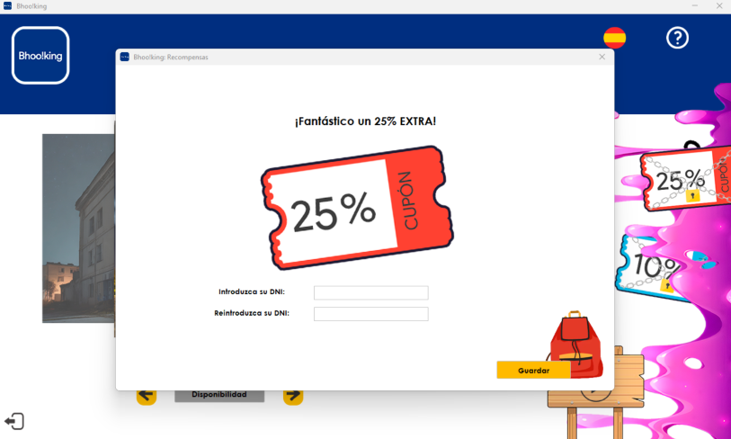

Juego
Selección de Ghostbusters
Comienza el juego seleccionando uno de los siete Ghostbusters disponibles en la fila inferior del tablero.


Tablero Piramidal
El tablero tiene una forma piramidal, y cada Ghostbuster puede avanzar solamente 1 o 2 espacios en función del resultado de un dado.
Algunos espacios estarán bloqueados, creando un desafío estratégico donde la elección de avanzar será crucial.
Fantasmas en el Tablero
En el tablero, encontrarás cinco tipos de fantasmas diferentes, distribuidos en varias ubicaciones.
Hay tres representaciones de cada tipo de fantasma en el tablero.
Fantasma Rey
En la cima del tablero se encuentra el Fantasma Rey, un desafío especial y estratégico. Eliminar al Fantasma Rey es clave para obtener el cupón EXTRA25.


Fantasma Rey
En la cima del tablero se encuentra el Fantasma Rey, un desafío especial y estratégico. Eliminar al Fantasma Rey es clave para obtener el cupón EXTRA25.
Objetivos para Cupones
Conseguir el cupón EXTRA25: Elimina al menos un Ghostbuster de cada equipo y al Fantasma Rey.
Conseguir el cupón EXTRA10: Elimina al menos un Ghostbuster de cada equipo, pero no al Fantasma Rey.
Si no se logra ninguno de los objetivos anteriores, no se obtiene ningún cupón adicional.
No se podrá guardar un cupón si todavía no se ha gastado el que se tiene.

Habilidad y Suerte
El juego combina la habilidad estratégica de elegir la ruta correcta en el tablero con la suerte de los resultados del dado.
La eliminación de fantasmas y Ghostbusters se basa en decisiones tácticas y habilidades del jugador.